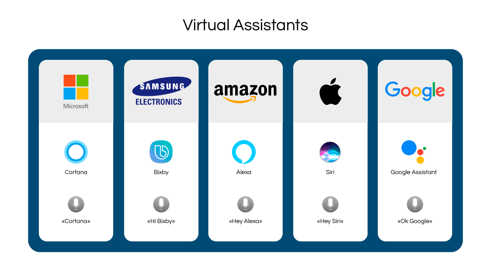
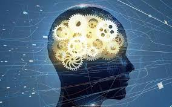

How Artificial Intelligence is changing the World !

Dec, 2020 | 1 comments
What is AI ?
AI is a set of technological tools and algorithms that provides us with predictions,
recommendations, and decisions to alter digital and real environments that are based on various data.
Artificial intelligence is supposed to perform the tasks that initially were considered to be
predominantly done by humans.
AI has two major subsets, which are machine learning (ML) and deep learning (DL).
To provide you with the definitions of ML and DL, let’s draw the following distinction
between how humans and machines differentiate between two objects. Without going into
details about how your brains work, you, as a human being, can easily and quickly set
things apart due to your past experiences. But how can machines do this? How can they
distinguish between two things? They do it with the help of ML and DL.
CONTINUE READING
Artificial Intelligence Examples in the Real World

June 20, 2020 | 2 comments
The impacts of artificial intelligence is not only visible but also tangible.
Take out your Android phone and say, “Ok, Google.” Once you’ve uttered it,
you’ll hear a pleasant woman’s voice. This is artificial intelligence in its
manifestation as virtual assistants, or, as sometimes also called chatbots.
However, it should be noted that some companies and people still prefer to
distinguish between chatbots and virtual assistants.
Many major companies offer their own artificial intelligence assistants:
Microsoft uses Cortana, Samsung Electronics utilizes Bixby, Amazon has Alexa,
Apple offers Siri, and Google has Google assistant, respectively. These AIs
can understand human commands and respond accordingly. For instance, Siri can
turn the music at your place, or Google Assistant can type a message for your
friend at your request, or Alexa can open your Uber app. But, AI in your
smartphone will be able to go far beyond.
CONTINUE READING
Your Doctor’s Assistant is AI
AI is being increasingly incorporated by doctors to transcribe, read,
analyze, and make predictions based on notes and conversations between
physicians and their patients. This opens up new possibilities for care and
new concerns about privacy, according to a recent account from Axios.
A big and largely invisible contribution AI can make is to capture a
physician’s written or spoken notes automatically. Spending hours entering
data manually into electronic health records (EHRs) is not helpful to medical
professionals close to burning out.
A recent study from researchers at the University of New Mexico, outlined in
EHR Intelligence, found that 13% of stress and burnout self-reported by
physicians were directly correlated to EHRs. Philip Kroth, MD, director of
Biomedical Informatics Research at UNM, found that 40% of clinician stress
is related to clinical process design and structure, both of which are very
much correlated with EHRs
CONTINUE READING
Sept 28, 2019 | 3 comments
How AI helps in fighting COVID-19 !!
AI Detects COVID-19 X-Rays
AI-enabled software is up to interpret images and diagnose you with a disease almost
accurately. Just have a look at a neural-network application CheXNet. You just need to open
the CheXNet app, take a picture of your x-ray, and voila, within a few seconds, the app
outputs all diseases that you possibly have. Importantly, they are sorted by the order from
the most likely to least likely, so you know what specialist to address.
Another x-ray system called qXR has originally detected the varieties of lung abnormalities.
But after the outburst of coronavirus, this AI technology has taught itself to identify the
symptoms of pneumonia caused by this deadly virus. As a result, qXR distinguishes between
COVID and non-COVID x-ray samples with an impressive accuracy of 95%.
With the help of deep learning, AI has trained itself to recognize patterns and identify
diseases in new x-rays. So, normally done by doctors, x-ray analysis can now be successfully
managed by machines..
CONTINUE READING

Feb 20, 2021 | 9 comments